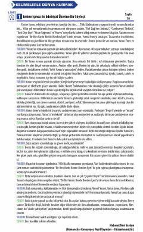

YİC2 darajasidagi turk tili o'quvchilari uchun maxsus dinleme matnlari to'plami.
Ushbu kitob Yunus Emre Enstitüsining C2 darajasidagi turk tili o'quvchilari uchun mo'ljallangan dinleme (tinglab tushunish) matnlarini o'z ichiga oladi. Materiallar adabiyot, san'at va madaniyat mavzularidagi intervyu va suhbatlardan iborat. U til o'rganuvchilarning yuqori darajadagi tinglash ko'nikmalarini rivojlantirishga xizmat qiladi.